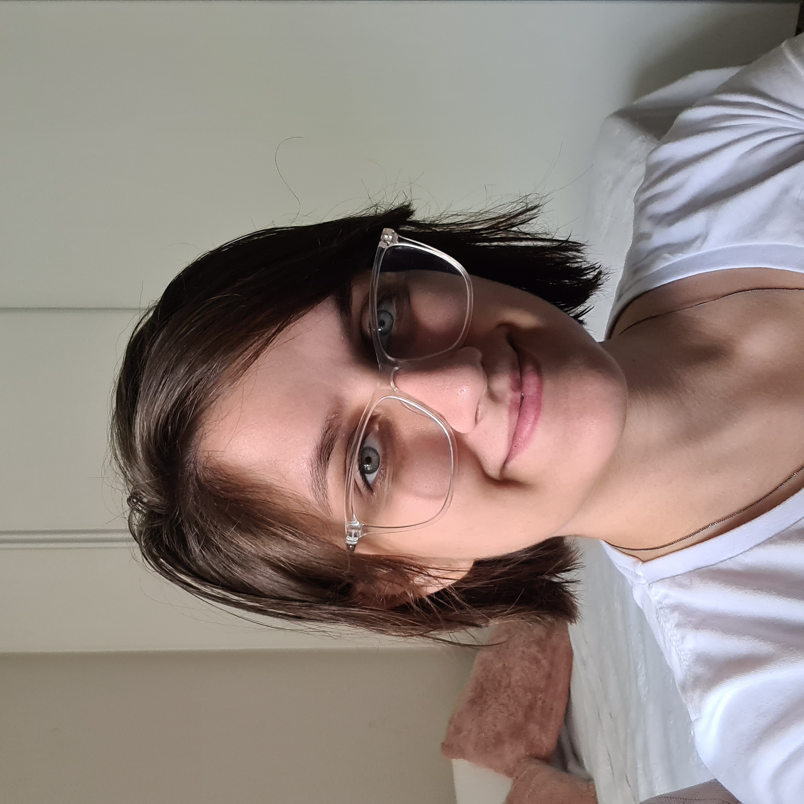

|  | Sou a Rebeca, 24 anos, carioca (born and raised!) mas meu coração pertence ao mundo. Me graduei em administração em 2018, e desde então trabalho em uma empresa de Óleo & Gás, exercendo a função. Sempre gostei muito de estudar e decidi aprender a programar porque sei que é uma demanda cada vez maior no mercado e uma profissão que pode me a autonomia desejada. Comecei a programar literalmente do zero, este é o meu primeiro projeto e estou me descobrindo cada vez mais autodidata nesse período. Quero ajudar a quebrar o paradigma de que programação não é para mulheres e no futuro, espero ser referência para meninas que queiram começar. Prazer! |